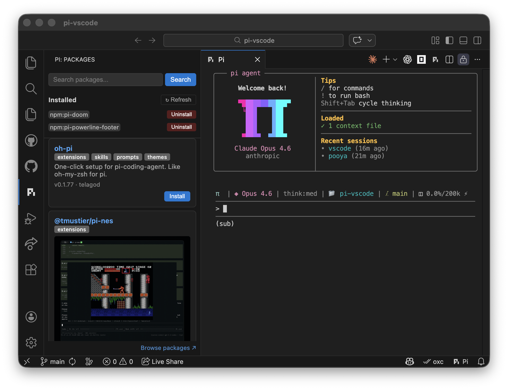

Full Pi TUI
Open Pi as a real integrated terminal with sessions, keyboard controls, and workspace-aware prompts.
A focused VS Code extension for the Pi coding agent. Keep the agent terminal beside your editor, share live context, and make changes without leaving your workspace.
// your VS Code workspace pi › inspect the active file ↳ VS Code bridge connected ↳ diagnostics: 0 errors · 2 hints ✓ context ready pi › make the tests pass
Install Pi, install the extension, then open the Pi terminal from the status bar or Command Palette.
Use the current package from the official Pi project.
npm install --global @earendil-works/pi-coding-agent
Find Pi Coding Agent - Webboxes in the VS Code Marketplace.
ext install webboxes.pivscode
The extension connects Pi to VS Code APIs through a local, authenticated bridge.
Open Pi as a real integrated terminal with sessions, keyboard controls, and workspace-aware prompts.
Read selections, diagnostics, symbols, references, open editors, and workspace folders from Pi.
Save files, format documents, apply workspace edits, and execute quick fixes while buffers stay synchronized.
The extension keeps the agent and the code side by side, with a live VS Code footer status.

Search setup, commands, bridge tools, and troubleshooting. Results update as you type.
Still stuck? Open an issue and include your OS, VS Code version, and Pi version.
Install @earendil-works/pi-coding-agent globally, or set the absolute
path in Settings under pi-vscode.path.
Run Pi: Upgrade Pi and Packages from the Command Palette. It upgrades Pi
and runs pi update.
Use the GitHub issue tracker ↗.